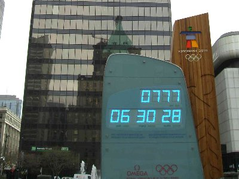
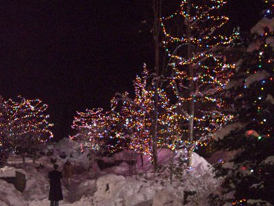
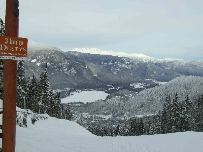
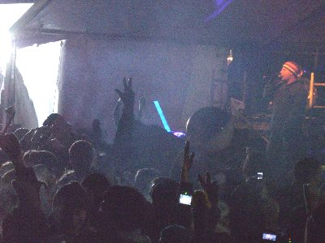

カナダでスキー三昧 | 2007年12月〜2008年1月（年末年始） |
|---|---|
| バンクーバーにて ウィスラーへ出かけるバス発車まで時間があったので観光。 冬季オリンピックのカウントダウン記念碑の前で撮影。 到着した日は丁度「７７７」日前でありフィーバー！現地案内人も絶賛。 | |
|  冬期オリンピックまでのカウントダウン７７７！ |  クリスマスツリー |
| 港町でありホバー飛行機や船での移動が盛んな町である。 私は２度目の訪地であり、以前は船で往復をして、夜景のすばらしさに感動した。 この時はホバー飛行機が着水するのを、港に迫出してるホテルの外周路で確認した。 雪山が迫って見えた。正月まではクリスマスなので、一帯が綺麗なツリーが溢れていた。 | |
 ツリーその２ |  外もクリスマス一色 まさにホワイトクリスマス |
| ウィスラーにて。 ４日間お世話になりましたホテル。ジャグジー、バー、マッサージセラピーが内設されている。 基本的に近場のスーパーで購入し済まし、食費を安くした。大晦日はカップラーメンで！ 町並みは商店街。世界的なレジャースポットなので食事代金は高め。雰囲気は良いのですが。 ゲレンデは志賀高原の３倍の広さという、ガイドに２日案内して頂き、規模に感動した。 いくら滑ってもリスト乗り場が見つからない！さらに雪が青いんです！通常白いのですが‥。 フレッシュトラックの為に朝７時のゴンドラ乗り場に着いたのですが、大混雑！ | |
 朝7時のゴンドラ乗り場 |  ゲレンデ食事 |
| 緯度が高いので日の出ている時間は短く、朝７時でも暗い。夕方４時でも暗い。 これは”朝一番のゲレンデを滑りましょう！”が合言葉。カナダ人さんは新雪大好きだそうだ。 限定人数が決まっていて、ゲレンデ降り場で朝食（バイキング）を堪能できる（早朝期間中にリフト乗り放題＋ゴンドラ＋バイキング＋半日ガイドの費用＄７０ 約8000円程度） | |
 新雪ゲレンデ |  ロングツーリングコース |
| 朝食を取っている最中にベルが鳴る‥ゲレンデ開放の合図。朝食場はがらんどうになった。 また、雪が降った次の朝は遅刻は認可。朝一番にフレッシュトラックをして、通勤するのが通らしい。 朝のサーフィンのような感じやね。ちなみに逸話やローカルルールがあり。 ・BURN STEW：景色がきれいでシチューを焦がしてしまった！？ ・WISTLER BOWL：始めて入る人は滑り後を別々に降りる鉄則！？ また、外に爆音が聞こえる。ダイナマイトを使用して雪崩を人為的に起こし、防止するとの話だ。 規模が違う。不発弾がゲレンデ内にあるかもとの話は刺激的であった。 ゲレ食。ブラッコムで有名な食堂。ワッフルとステーキサンドウィッチが旨いと。 記念碑。ウィスラーのゴンドラ降り場に２頭の熊、山の頂上にはオリンピックのマスコットがいた。 | |
 雲海の上のゲレンデ |  カナダサイコー！イェーイ！ |
|  年越しカウントダウン！ |  楽しかったよな！熊さん。 |
| 年明けパーティ。商店街の一角に施設が設けられ、年明けのカウントダウンを行った。 DJが演奏で盛り上げ、ファイヤーダンスを脇で行う。群衆の中にボールが投入される。 私はそれを雪の高台の上から、踊って望んでました‥やはり外人さんのテンションは高い。 最後に花火が上がりました（ここでは滅多にみれない代物とか）。 ゲレンデガイドして頂きました上村愛子（同姓同名）さん、村上さんありがとうございました。 写真＆コメント ｂｙ sugar | |